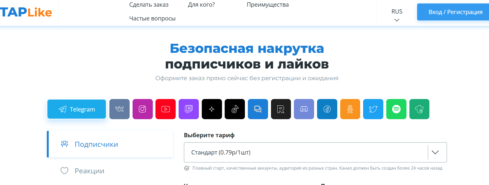
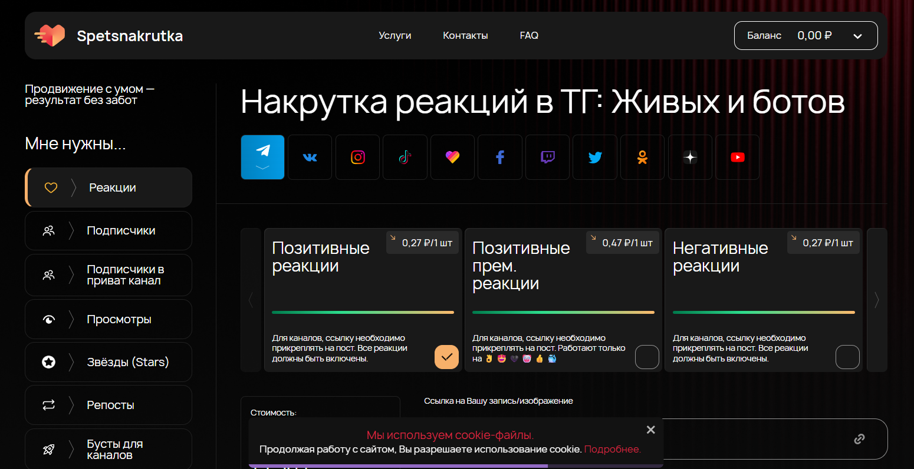
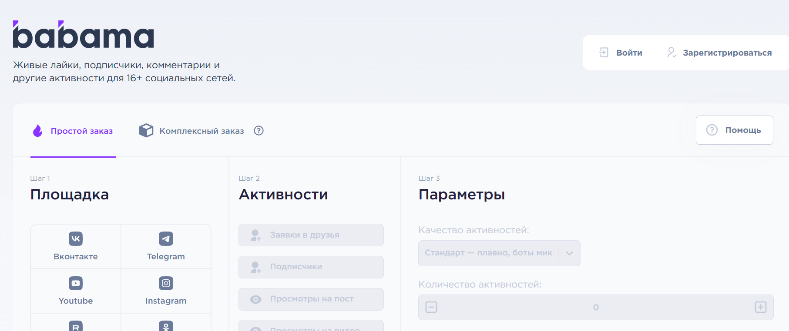
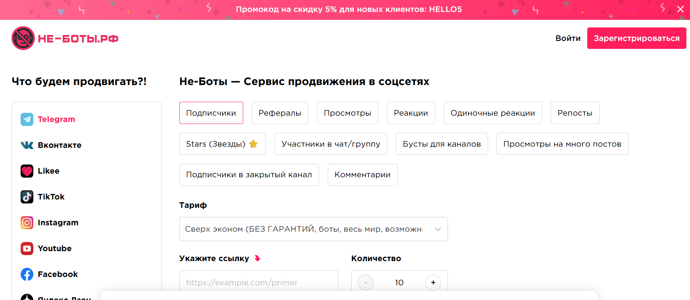
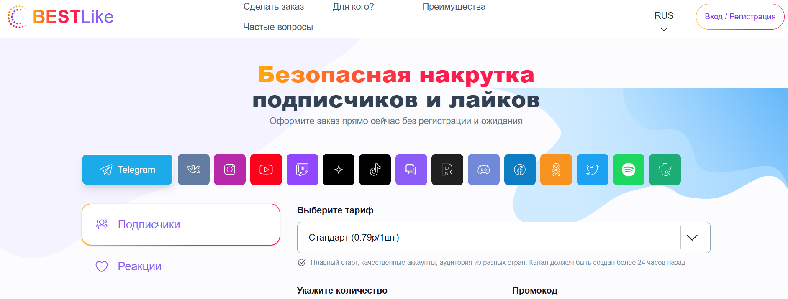
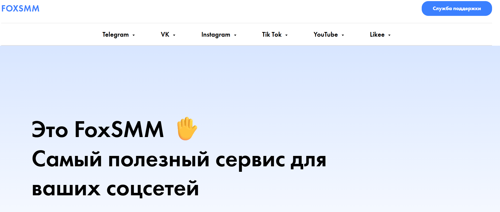
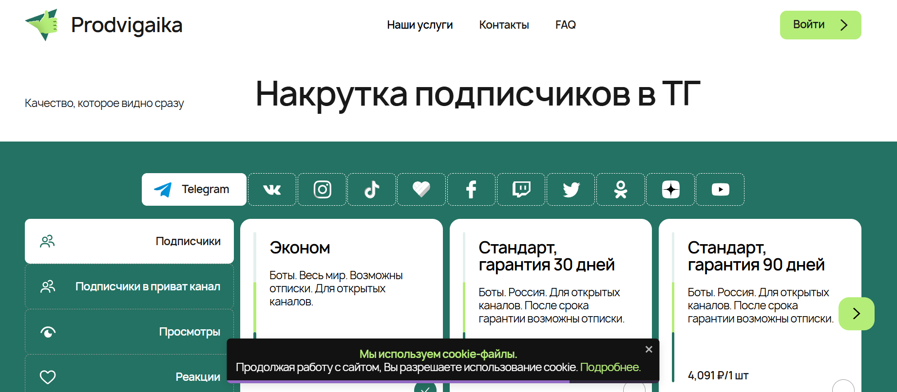
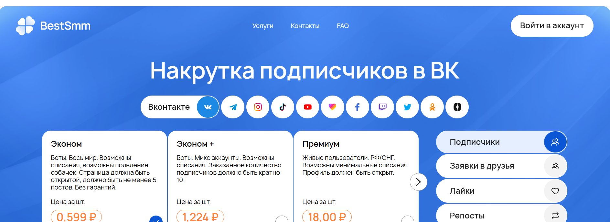
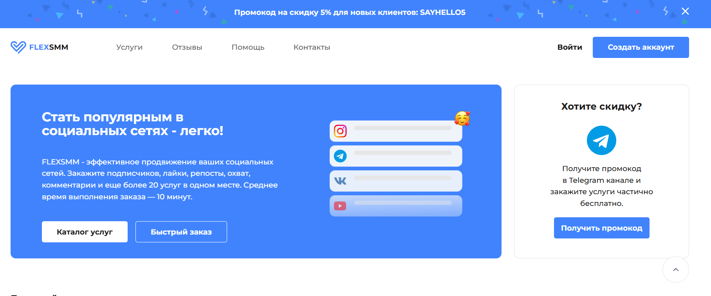

Накрутка подписчиков в telegram-канале — это способ быстро набрать аудиторию с помощью автоподписки, ботов, фейковых или живых фолловеров. Мы составили рейтинг сервисов, где можно купить дешевых подписчиков, ускорить продвижение и эффективно раскрутить свой канал
✅ Лучшие сервисы по накрутке подписчиков в телеграмм канал
| Место | Сервис | Сайт |
|---|---|---|
| 1 🥇 | primelike.ru Бренд продвижения Telegram-каналов |
Перейти |
| 2 🥈 | taplike.ru Сервис для накрутки подписчиков в Telegram |
Перейти |
| 3 🥉 | spetsnakrutka.ru Инструмент для накрутки подписчиков Telegram |
Перейти |
| 4 | Babama Продвижение и накрутка телеграм-каналов |
Перейти |
| 5 | не-боты.рф Сервис накрутки подписчиков для Telegram-каналов |
Перейти |
| 6 | bestlike.io Накрутка подписчиков Telegram-канала |
Перейти |
| 7 | foxsmm.ru Сервис накрутки подписчиков Telegram |
Перейти |
| 8 | prodvigaika.ru Сервис накрутки подписчиков Telegram-каналов |
Перейти |
| 9 | bestsmm.ru Сервис накрутки подписчиков Telegram |
Перейти |
| 10 | flexsmm.com Сервис накрутки подписчиков Telegram-канала |
Перейти |
1. Primelike.ru – бренд продвижения Telegram-каналов

⭐ Рейтинг: 5.0
- Сайт: primelike.ru
- Минимальная цена: от 0.70 рубля за одного подписчика.
- Ассортимент: Накрутка Telegram-каналов, а также продвижение в TikTok, VK, Instagram, YouTube и других соцсетях.
- Гарантии: Прирост подписчиков соответствует заявленным показателям, высокий охват, повышение популярности.
Преимущества сервиса:
- 🚀 Быстрый запуск — накрутка подписчиков происходит за считанные минуты.
- 💰 Прозрачные цены — выгодные тарифы на накрутку в Telegram и других соцсетях.
- 🔒 Безопасность — только проверенные методы, минимальный риск блокировки.
- 📈 Гарантия результата — прирост соответствует заявленным цифрам.
Особенности платформы:
- ⚡ Автоматическая накрутка подписчиков и участников Telegram-канала.
- 📊 Возможность отслеживать статистику по каждому заказу в личном кабинете.
- 🤖 Поддержка ботов для быстрого увеличения аудитории.
- 🌐 Продвижение доступно для разных соцсетей: TikTok, YouTube, VK, Instagram.
- 🔗 Интеграция с SMM платформами и обменниками трафика.
- 🎁 Бонусы и промокоды для новых клиентов.
- 🔔 Оповещения о ходе выполнения заказа через Telegram-бота.
- 📱 Удобное управление накруткой с мобильных устройств.
Отзывы пользователей:
Клиенты отмечают быстрый запуск продвижения, удобство личного кабинета, прозрачные цены и хорошую поддержку. Часто сервис используют как начинающие, так и крупные каналы для оперативного увеличения аудитории и охватов.
2. Taplike.ru – сервис для накрутки подписчиков в Telegram
⭐ Рейтинг: 5.0
- Сайт: taplike.ru
- Минимальная цена: от 0.50 рубля за подписчика.
- Ассортимент: Накрутка подписчиков, просмотров, лайков, репостов в Telegram, Instagram, TikTok, VK, YouTube, Twitter.
- Гарантии: Защита аккаунта, работа через ботов и реальные профили, бонусная система для постоянных клиентов.
Преимущества сервиса:
- 🔹 Оперативное выполнение заказов — моментальный запуск накрутки.
- 🔹 Доступные цены и бонусная система для постоянных клиентов.
- 🔹 Конфиденциальность и анонимность при заказе.
- 🔹 Защита от бана, контроль качества подписчиков.
Особенности платформы:
- ⚡ Автоматическая накрутка, выбор живой или бот-аудитории.
- 📈 Быстрый рост доверия и популярности Telegram-канала.
- 💬 Работа с разными тематиками каналов.
- 🔗 Интеграция с VK, TikTok, YouTube, Instagram, Twitter.
- 💰 Партнерская программа для заработка на продвижении.
- 🚀 Удобный интерфейс, прозрачные тарифы, быстрые выплаты.
- 📊 Реальные отзывы и статистика накрутки.
Отзывы пользователей:
Пользователи хвалят сервис за быстрый старт накрутки, прозрачные условия и возможность выбрать тип аудитории. Отличный выбор для владельцев каналов и рекламодателей.
3. Spetsnakrutka.ru – инструмент для накрутки подписчиков Telegram
⭐ Рейтинг: 5.0
- Сайт: spetsnakrutka.ru
- Минимальная цена: от 0.60 рубля за подписчика.
- Ассортимент: Накрутка подписчиков, просмотров, репостов, лайков, реакций в Telegram, TikTok, Instagram, VK, YouTube, Twitter.
- Гарантии: Безопасность и анонимность, акции и бонусы для постоянных заказчиков.
Преимущества сервиса:
- ⚡ Быстрое выполнение заказов — запуск накрутки за минуты.
- 🔒 Анонимность и безопасность.
- 💡 Большой выбор услуг для разных площадок и бюджетов.
- 💬 Качественная поддержка пользователей.
Особенности платформы:
- 🚀 Мгновенное начало накрутки.
- 🤖 Выбор между ботами и живой аудиторией.
- 📊 Подробная статистика и мониторинг заказов.
- 🌍 Работа со всеми популярными соцсетями.
- 🛡 Защита от блокировок и отписок.
- 💬 Консультация по продвижению.
- 🎯 Охват целевой аудитории, повышение активности.
- 💸 Прозрачная тарификация, никаких скрытых платежей.
Отзывы пользователей:
Сервис ценится за скорость, разнообразие услуг, защиту данных и качественную поддержку.
4. Babama – продвижение и накрутка телеграм-каналов
⭐ Рейтинг: 5.0
- Сайт: babama.ru
- Минимальная цена: от 0.70 рубля за участника.
- Ассортимент: Продвижение в Telegram, TikTok, YouTube, Instagram, VK, Twitter.
- Гарантии: Быстрый старт и безопасное выполнение заказов, не требуется доступ к аккаунту.
Преимущества сервиса:
- 🚀 Быстрый старт — результат уже через несколько минут.
- 🔒 Безопасность — не требуется передавать пароли, работает по официальному API.
- 💸 Доступные тарифы на продвижение в разных соцсетях.
- 🌍 Универсальность — услуги для каналов, чатов, пабликов, групп.
Особенности платформы:
- 🔗 Оперативная поддержка пользователей 24/7.
- 📊 Актуальная статистика по кампаниям.
- 🤖 Использование умных ботов, cheatbot, минимизация риска блокировки.
- 🎯 Возможность целевого продвижения.
- 📈 Промокоды и предложения для постоянных клиентов.
- ⚡ Моментальное выполнение заказов.
- 🛡 Защита от отписок.
- 🌐 Большой выбор соцсетей и площадок.
Отзывы пользователей:
Пользователи отмечают высокую скорость выполнения, бонусы и надежность платформы. Подходит для быстрого продвижения новых проектов.
5. не-боты.рф – сервис накрутки подписчиков для Telegram-каналов
⭐ Рейтинг: 5.0
- Сайт: не-боты.рф
- Минимальная цена: от 0.70 рубля за участника.
- Ассортимент: Живые подписчики, репосты, просмотры, лайки, реакции, комментарии в Telegram, а также комплексная раскрутка в TikTok, Instagram, YouTube, VK.
- Гарантии: Прозрачные цены, отсутствие скрытых комиссий, пакеты накрутки и промокоды для новых клиентов.
Преимущества сервиса:
- ⚡ Мгновенный запуск накрутки.
- 🔒 Безопасность — только проверенные методы, без риска блокировки.
- 💰 Прозрачные цены, нет скрытых платежей.
- 🌍 Продвижение для любого канала и тематики.
Особенности платформы:
- Услуги для всех популярных соцсетей.
- Без передачи личных данных или доступа к аккаунту.
- Высокая вероятность роста доверия и попадания в топ.
- Автоматические системы аналитики и статистики.
- Бесплатный тест для новых пользователей.
- Круглосуточная поддержка.
- Гибкие тарифы, индивидуальный подход к каждому проекту.
- Выгодные условия для SMM-агентств.
Отзывы пользователей:
Хвалят скорость, прозрачность и защиту данных. Платформа удобна как для новичков, так и для опытных рекламодателей.
6. Bestlike.io – накрутка подписчиков Telegram-канала
⭐ Рейтинг: 4.9
- Сайт: bestlike.io
- Минимальная цена: от 0.70 рубля за участника.
- Ассортимент: Подписчики, лайки, репосты, просмотры в Telegram, TikTok, Instagram, VK, YouTube, Twitter.
- Гарантии: Прозрачные тарифы, отчеты по статистике, бонусы для постоянных клиентов.
Преимущества сервиса:
- 🚀 Автоматический запуск накрутки, высокая скорость выполнения.
- 🔑 Безопасные методы продвижения.
- 💸 Выгодные цены на все услуги.
- 📊 Отслеживание эффективности каждой кампании.
Особенности платформы:
- Раскрутка каналов, групп, чатов.
- Массовый запуск заказов, автопросмотры публикаций.
- Живые подписчики и автоматические накрутки.
- Работа с популярными соцсетями.
- Индивидуальные настройки по тематикам и аудитории.
- Удобный интерфейс для заказов.
- Аналитика эффективности, отчеты по охвату.
- Регулярное обновление функционала.
Отзывы пользователей:
Платформа популярна среди блогеров и бизнесов за счет гибкости, безопасности и бонусной системы.
7. Foxsmm.ru – сервис накрутки подписчиков Telegram
⭐ Рейтинг: 4.9
- Сайт: foxsmm.ru
- Минимальная цена: от 0.70 рубля за участника.
- Ассортимент: Продвижение в Telegram, TikTok, VK, Instagram, YouTube, Twitter.
- Гарантии: Прозрачные цены, бонусы, поддержка для массовых заказов.
Преимущества сервиса:
- 🚀 Быстрая накрутка подписчиков, отслеживание процесса онлайн.
- 🔒 Безопасные методы, исключающие бан Telegram.
- 💵 Выгодные условия для крупных заказов.
- 🌐 Мультиплатформенность — поддержка всех популярных соцсетей.
Особенности платформы:
- Работа без передачи доступа к аккаунту.
- Массовое продвижение в нескольких соцсетях.
- Профессиональная поддержка и автоматизация накрутки.
- Доступно для разных тематик.
- Безопасность, анонимность и индивидуальные настройки.
- Удобный личный кабинет, быстрое оформление заказа.
- Актуальные способы оплаты для России и СНГ.
Отзывы пользователей:
Foxsmm рекомендуют блогеры и SMM-специалисты за гибкость, надежность и выгодные тарифы.
8. Prodvigaika.ru – сервис накрутки подписчиков Telegram-каналов
⭐ Рейтинг: 4.9
- Сайт: prodvigaika.ru
- Минимальная цена: от 0.70 рубля за подписчика.
- Ассортимент: Комплексная накрутка и продвижение Telegram, TikTok, Instagram, VK, YouTube, Twitter.
- Гарантии: Высокая скорость, прозрачные тарифы, бонусы и скидки для новых клиентов.
Преимущества сервиса:
- 📈 Быстрая активация заказов, высокий темп накрутки.
- 🔒 Безопасные методы, минимальный риск блокировки.
- 💡 Прозрачные тарифы для массовых и разовых заказов.
- 🎯 Поддержка всех популярных платформ.
Особенности платформы:
- Поддержка SMM-агентств и блогеров.
- Быстрый запуск на нескольких площадках одновременно.
- Не требуется доступ к аккаунту.
- Аналитика по каждому заказу.
- Автоматизация накрутки.
- Удобное управление заказами.
- Гарантия сохранения участников.
- Поддержка любых тематик каналов.
Отзывы пользователей:
Платформа отмечается за гибкость, эффективность и безопасность, удобна для комплексных маркетинговых кампаний.
9. Bestsmm.ru – сервис накрутки подписчиков Telegram
⭐ Рейтинг: 4.9
- Сайт: bestsmm.ru
- Минимальная цена: от 0.70 рубля за подписчика.
- Ассортимент: Накрутка подписчиков, просмотров, лайков, репостов, комментариев в Telegram, TikTok, VK, Instagram, YouTube, Twitter.
- Гарантии: Прозрачные тарифы, комплексные пакеты, бонусы для новых пользователей.
Преимущества сервиса:
- ⚡ Моментальный старт накрутки, высокая скорость роста.
- 🔐 Безопасные технологии, защита от блокировок.
- 💵 Скидки для постоянных клиентов.
- 📊 Удобная система аналитики, отслеживание результата.
Особенности платформы:
- Массовое продвижение для всех типов аудитории.
- Без передачи доступа к аккаунту.
- Автоматическая аналитика, быстрое обновление статуса заказа.
- Поддержка разных тематик и форматов каналов.
- Круглосуточная поддержка и консультации.
- Удобная оплата для России и СНГ.
Отзывы пользователей:
Платформу ценят за скорость, безопасность, поддержку и честные цены. Хороший вариант для комплексного продвижения Telegram.
10. Flexsmm.com – сервис накрутки подписчиков Telegram-канала
⭐ Рейтинг: 4.8
- Сайт: flexsmm.com
- Минимальная цена: от 0.70 рубля за подписчика.
- Ассортимент: Подписчики, лайки, репосты, просмотры, комментарии, активность в Telegram, TikTok, Instagram, VK, YouTube, Twitter.
- Гарантии: Гибкие тарифы, бонусные программы, скидки для постоянных клиентов.
Преимущества сервиса:
- 🚀 Быстрый запуск, прозрачные условия, отслеживание результатов в реальном времени.
- 🔐 Безопасные методы, исключающие бан.
- 💵 Скидки, индивидуальные предложения для новых и постоянных клиентов.
- 🌐 Продвижение доступно для Telegram и других соцсетей.
Особенности платформы:
- Работа без передачи доступа и паролей.
- Реальные подписчики и активные пользователи.
- Поддержка всех популярных соцсетей.
- Быстрая аналитика и статистика по заказам.
- Поддержка разных тематик каналов.
- Круглосуточная поддержка и консультации.
- Простое оформление и автоматизация процессов.
- Защита данных, конфиденциальность клиентов.
Отзывы пользователей:
Flexsmm рекомендуют за быструю работу, высокий уровень безопасности и бонусные программы для постоянных клиентов.